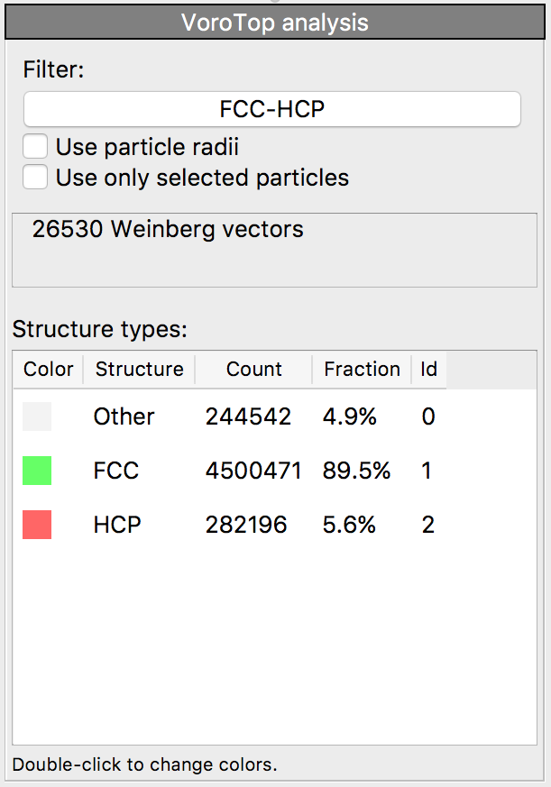

| Table of Contents | VoroTop analysis | Up |
|---|---|---|
| Prev | Modifiers | Next |
| Table of Contents | VoroTop analysis | Up |
|---|---|---|
| Prev | Modifiers | Next |
|  |
This modifier uses the Voronoi cell topology of a particle to characterize its local environment [Lazar, Han, Srolovitz, PNAS 112:43 (2015)].
The Voronoi cell of a particle is the region of space closer to it than to any other particle. The topology of the Voronoi cell is the manner in which its faces are connected, and describes the manner in which a particle's neighbors are arranged. The topology of a Voronoi cell can be completely described in a vector of integers called a Weinberg vector [Weinberg, IEEE Trans. Circuit Theory 13:2 (1966)].
This modifier requires loading a filter, which specifies structure types and associated
Weinberg vectors. Filters for several common structures can be obtained from the VoroTop
website. The modifier calculates the Voronoi cell topology of each particle, uses the provided
filter to determine the structure type, and stores the results in the
Structure Type particle property. This allows the user to subsequently select particles
of a certain structural type, e.g. by using the Select type modifier. The VoroTop
modifier requires access to the complete set of input particles to perform the analysis, and
should therefore be placed at the beginning of the processing pipeline, preceding any modifiers
that delete particles.
The VoroTop analysis method is well-suited for analyzing finite-temperature systems, including those heated to their bulk melting temperatures. This robust behavior relieves the need to quench a sample (such as by energy minimization) prior to analysis.
Further information about the Voronoi topology approach for local structure analysis, as well as additional filters, can be found on the VoroTop webpage.